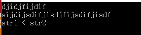
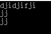
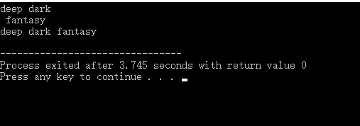
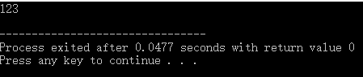
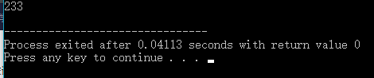
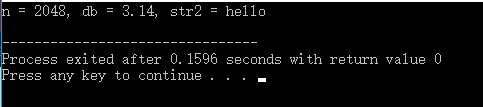

用于得到字符数组中第一个\0前的字符的个数，格式如下：
strlen(数组);例子：
#include <stdio.h>
#include <string.h>
int main(){
char str[10];
gets(str);
int len = strlen(str);
printf("%d\n", len);
return 0;
} 输入：
ababab输出：
6用于比较字符串大小，比较原则是按照字典序：
strcmp(字符数组1, 字符数组2)如果数组1长则返回正数，数组2长则返回负数，相等返回0。
#include <stdio.h>
#include <string.h>
int main(){
char str1[50], str2[50];
gets(str1);
gets(str2);
int cmp = strcmp(str1, str2);
if(cmp < 0) printf("str1 < str2\n");
else if (cmp > 0) printf("str1 > str2\n");
else printf("str1 == str2\n");
return 0;
}
上图中前两行是输入，最后一行是输出。
复制字符串给另一个字符串，用法：strcpy(str1, str2)。这样会把str2内容复制到str1。
示例：
#include <stdio.h>
#include <string.h>
int main(){
char str1[50], str2[50];
gets(str1);
gets(str2);
strcpy(str1, str2);
puts(str1);
return 0;
}
拼接两个字符串，strcat(str1, str2)，
#include <stdio.h>
#include <string.h>
int main(){
char str1[50], str2[50];
gets(str1);
gets(str2);
strcat(str1, str2);
puts(str1);
return 0;
}
sscanf与sprintf是专门用于处理字符串的，可以理解为“string + scanf”和“string + printf”。
用法就类似于在内存上以scanf和printf的方式将数据进行传递。举个例子，sscanf(str, "%d", &n);，这就是将str中内容以%d的格式写入到n中（可以这样理解，scanf(screen, "%d", &n);相当于是从screen屏幕捕获输入并输入到n中，从左到右，而sscanf起到的作用就差不多这样，从str按照"%d"的格式输入到n。sprintf则反过来，从右往左）。
比较简单，直接上示例：
#include <stdio.h>
int main() {
int n;
char str[100] = "123";
sscanf(str, "%d", &n);
printf("%d\n", n);
return 0;
} 
#include <stdio.h>
int main(){
int n = 233;
char str[100];
sprintf(str, "%d", n);
printf("%s\n", str);
return 0;
}
复杂点的例子：
#include <stdio.h>
int main(){
int n;
double db;
char str[100] = "2048:3.14, hello", str2[100];
sscanf(str, "%d:%lf, %s", &n, &db, str2);
printf("n = %d, db = %.2f, str2 = %s\n", n, db, str2);
return 0;
}
在字符串处理的时候相当有用。